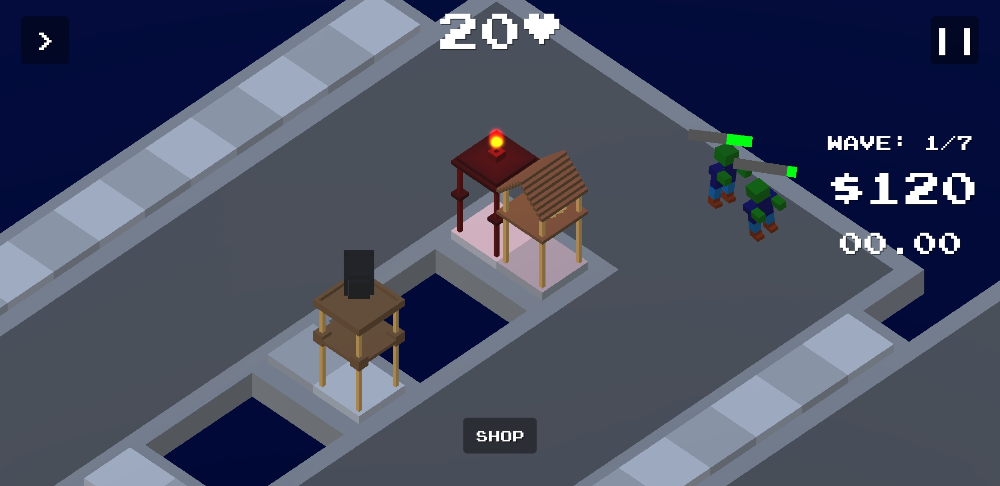
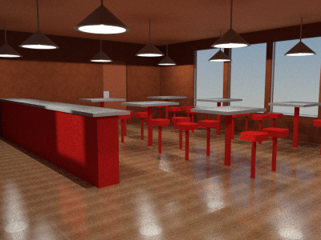
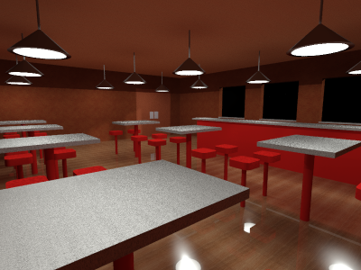

Projects
Voxel Vanquish Google Play Link

![[Image not found]](Attachments/VV1.png)
![[Image not found]](Attachments/VVConcept.png)
V.V. is the Tower Defense game that I've been developing with help from a graduate software engineer. Development began in December of 2018 and the first mobile release was in September of 2019. I completed most of the game on my own following a tutorial for Unity on YouTube by Brackeys. In total, there are now 50 scripts being used in the development towards a PC version.
AutoCAD Restaurant Renders


These are some pictures of a restaurant that I made in AutoCAD as a CAD II class final at IRSC. Dimensions should be life-scale; however, I did this despite it not being required. The main purpose of this assignment was to practice using materials and rendering.
NX 12.0 Spaceship PDF Link
![[Image not found]](Attachments/Space Ship.png)
![[Image not found]](Attachments/Space ShipBack.png)